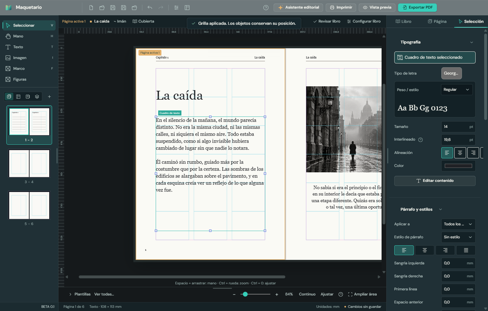

Qué cambió respecto de la versión 3.24 publicada, qué conviene probar y qué devolución nos sirve para seguir.
Para
Sebastián Poberezny
De
Juan Cruz Canteros · Tiny Studio
Fecha
9 de noviembre de 2026
Versión a probar
BETA 0.1 (instalador Maquetario BETA 0.1.exe)
Comparada con
Maquetario 3.24, la versión publicada (rama main)
En pocas palabras
BETA 0.1 es Maquetario 3.24 hecho de nuevo por dentro, con una interfaz más ordenada y funciones nuevas para trabajar sobre la página. Todo lo que hacía la 3.24 sigue estando: nada se quitó, se reorganizó y se sumó.
Es un programa nuevo para la computadora: se instala con un clic, sin pedir permisos de administrador y sin instalar nada aparte.
La interfaz es nueva: mismos colores de la marca (petróleo y verde agua), más sobria, con cada cosa donde se espera encontrarla.
Hay funciones nuevas para la página, la cubierta y la salida a imprenta.
Está lista para venderse desde Motiova: la conexión con la cuenta y la licencia por equipo ya están, todavía apagadas hasta que exista el lanzador.
Versión 3.24
BETA 0.1

El mismo libro en las dos versiones. En BETA 0.1: a la izquierda, sólo las herramientas que actúan sobre la página; a la derecha, el panel que sigue a lo que se toca.
Qué mejoró
El programa
Instalación de un clic, por usuario, sin permisos de administrador y sin depender de WebView2 ni de .NET.
Los archivos .mqt se abren con doble clic.
La ventana se adapta a las notebooks (desde 1366 × 768) y a monitores grandes.
Guardar dice la verdad: un solo aviso de cambios sin guardar y recuperación del trabajo si el programa se cierra de golpe.
La base queda lista para macOS y Linux, además de Windows.
Conexión con la cuenta de Motiova, licencia por equipo y aviso de versión nueva (preparado, todavía apagado).
La interfaz
Un sistema de diseño propio: mismos colores, tamaños y controles en toda la app, con la tipografía ordenada como en macOS. Menos dorado, sin degradés ni etiquetas en mayúsculas.
Herramientas a la izquierda, sólo las de la página: Seleccionar, Mano, Texto, Imagen, Marco y Figuras. Antes había atajos mezclados con herramientas y algunas repetidas (dos para crear texto).
Un selector debajo: Páginas, Estructura del libro, Índice y Capas, cada uno en su vista.
El panel derecho tiene tres pestañas:
Libro: formato y márgenes, grilla, foliado, cornisa, titulillo y fuentes.
Página: la página activa y sus excepciones.
Selección: lo que esté elegido.
Antes eran siete pestañas.
El panel sigue a lo que se toca: elegir una caja abre Selección, y con una caja de texto aparece primero la tipografía. Tocar el vacío de la página lleva a Página.
Cubierta, Revisar libro y Configurar libro están juntos en la barra del documento.
Los avisos del sistema aparecen siempre en el mismo lugar, arriba al centro, en verde agua, y se distinguen por tipo: éxito, información, advertencia o error.
Una sola puerta de Ayuda: tutorial guiado y glosario editorial.
Tres espacios de trabajo: Inicial (lo esencial, para el aula), Predeterminado y Personalizado.
Castellano, inglés y portugués completos.
Trabajar sobre la página
Guías desde las reglas: arrastrar desde la regla de arriba saca una guía horizontal, y desde la de la izquierda, una vertical. Con Seleccionar se agarra una guía para moverla, y soltándola fuera de la página se quita.
La caja de texto se ajusta a su texto: doble clic en el tirador de abajo (al medio) y la caja termina donde termina el último renglón, como en InDesign.
Escape a mitad de un arrastre devuelve la caja a su lugar.
Mover y cambiar el tamaño es más fluido: barras y panel se actualizan una vez por cuadro.
El texto seleccionado sobre el papel se lee bien.
Los campos con unidad (mm, pt) ya no tapan la unidad con las flechitas.
Cubierta
Vista apaisada: la pieza desplegada a la izquierda, las medidas a la derecha.
La cubierta nueva arranca en papel blanco con texto oscuro.
Un solo par de botones para poner o quitar la imagen de cada zona.
Salida e imprenta
PDF con la medida exacta de la hoja y las cajas de corte y de sangrado que leen las imprentas.
Nueva opción "PDF para imprenta (PDF/X-4)", el estándar que piden muchas imprentas.
Paquete para imprenta: proyecto, fuentes, imágenes y PDF en una carpeta.
En camino (todavía no para probar)
Un motor de composición propio, con justificación y partición de palabras de calidad de imprenta, igual en pantalla y en el PDF. Ya funciona, pero está apagado mientras se termina de ajustar. Más adelante te vamos a pedir que mires sus páginas y elijas los valores por defecto.
Qué probar
Lo ideal es usarlo como de costumbre, con un libro real. Esta lista es una guía para no dejar nada afuera.
Instalar.Abrir Maquetario BETA 0.1.exe. No tendría que pedir permisos de administrador. Al abrir, la bienvenida dice "BETA 0.1".
Abrir un proyecto hecho con la 3.24.Que se vea igual que antes: páginas, textos, imágenes, folios y cubierta. Es lo más importante de verificar.
Empezar un libro nuevo y explorar el ejemplo.Crear un libro desde cero, armar uno desde un manuscrito y abrir la novela de ejemplo.
Encontrar cada cosa.Herramientas a la izquierda, panel a la derecha. ¿Lo que buscás está donde lo esperás? ¿El panel cambia solo cuando tiene que cambiar?
Texto.Crear cajas, escribir y pegar texto, tipografía, párrafos, estilos y separación silábica. Doble clic en el tirador de abajo para ajustar la caja al texto.
Guías.Sacar guías de las reglas, moverlas y quitarlas.
Diseño del libro.Formato y márgenes, grilla y plantillas, foliado, cornisa y titulillo. Ocultar el folio en una página puntual desde la pestaña Página.
Imágenes, marcos, figuras y capas.Poner, mover, ordenar, bloquear y ocultar.
Índice y estructura.Armar el índice y moverse por las partes del libro desde la vista Estructura.
Cubierta.Medidas, lomo, solapas e imágenes en cada zona.
Revisar libro.Que avise texto que no entra y objetos fuera de la página.
Salida.PDF común, PDF para imprenta (PDF/X-4), impresión y paquete para imprenta. Si se puede, mandar un PDF/X-4 a una imprenta real.
Guardar y volver.Guardar, cerrar y reabrir. Probar también cerrar sin guardar y ver qué ofrece al volver a abrir.
Ayuda e idiomas.Tutorial guiado, glosario, los tres espacios de trabajo y la interfaz en inglés y portugués.
Qué devolución nos sirve
Lo que más nos ayuda es saber dónde te trabás o dónde algo no responde como esperás. Algunas preguntas para guiarte:
¿Hay algo que hacías en la 3.24 y ahora no encontrás o no funciona igual? Es la prioridad: la idea es no haber perdido nada.
¿Cada cosa está donde la buscarías? ¿Hay algo que pondrías en otro lugar o agruparías distinto?
¿Los nombres y textos se entienden, con el vocabulario del oficio? ¿Algún término raro o mal traducido?
Con un libro largo, ¿se siente ágil? ¿Hay momentos en que se pone lento?
¿Los PDF salen como esperás? ¿Una imprenta los aceptó sin pedir cambios?
Para alumnos en clase, ¿alcanza el espacio Inicial y el tutorial? ¿Qué sacarías o agregarías?
¿Qué función te gustaría ver primero en la próxima versión?
Cómo contarnos un problema
Qué incluir
Por qué ayuda
Qué estabas haciendo
Los pasos, en el orden en que los hiciste.
Qué esperabas y qué pasó
A veces el programa funciona, pero no como se espera.
Una captura de pantalla
Vale más que la descripción.
El archivo .mqt, si podés
Nos deja ver el problema con el mismo libro.
Lo que ya quedó decidido
Licencia de pago único, con las actualizaciones incluidas.
Cada compra se puede usar en dos computadoras.
El programa funciona hasta siete días sin conexión.
Lo que falta decidir con vos
Los valores por defecto del motor de composición nuevo, cuando lo prendamos.
Gracias por probarlo. Cualquier cosa, por el canal de siempre.
 Maquetario
Maquetario